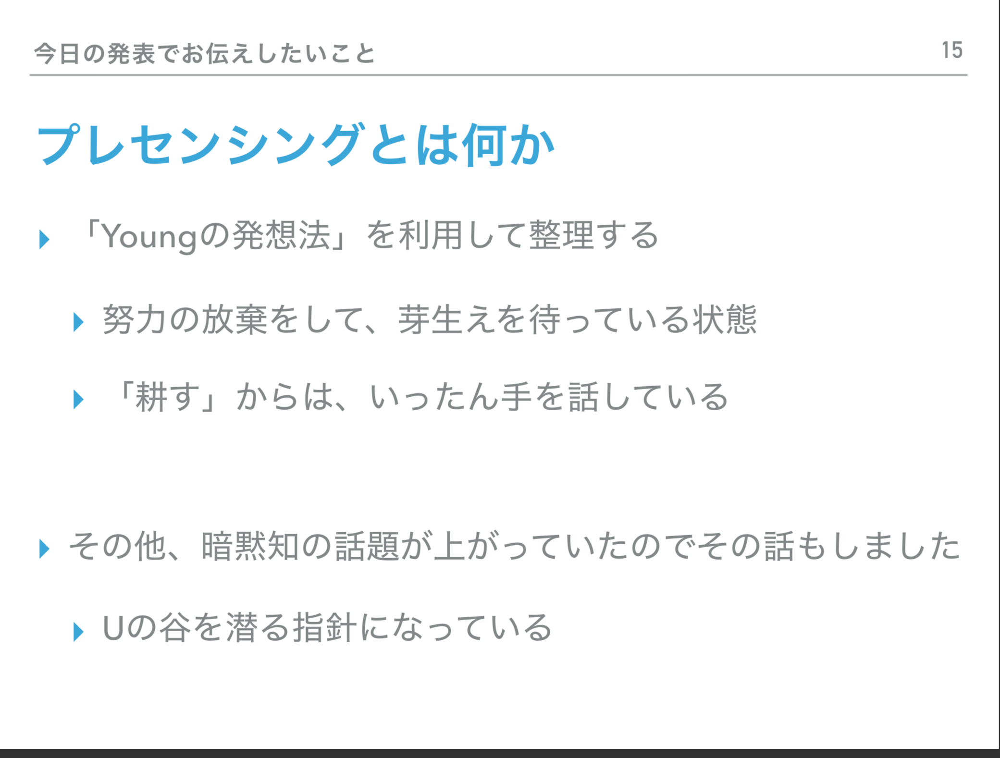
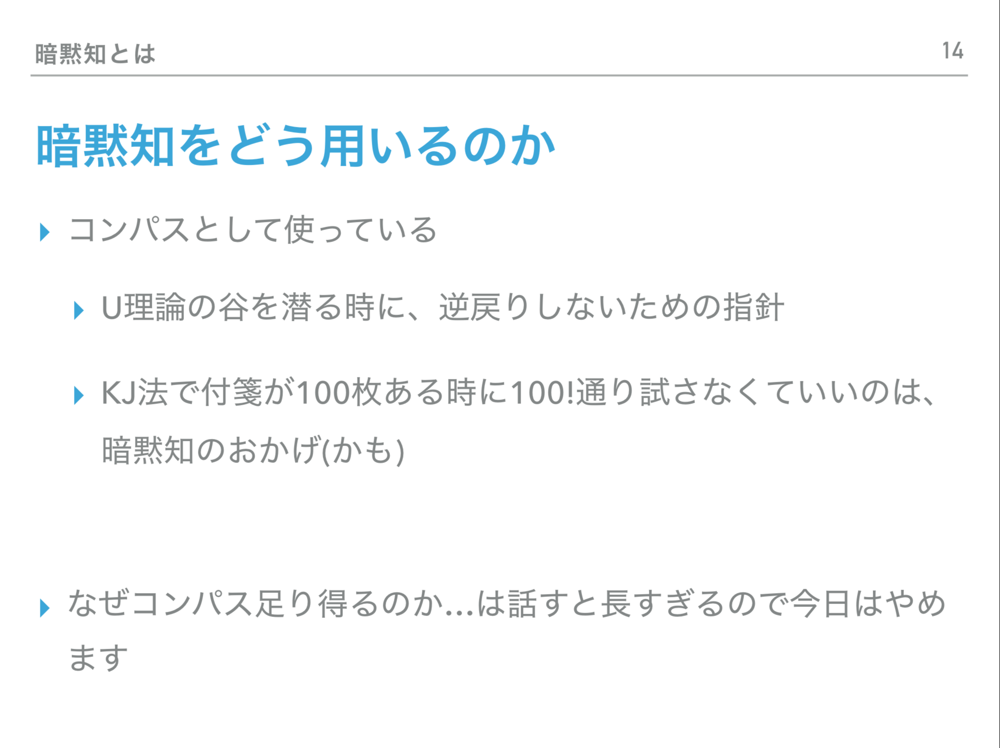

このゼミのまとめスライド

ゼミのPDF
なぜこのスライドを作ったのか
-
このゼミ
のリフレクションとして作成した。
- 「プレセンシングがよくわからない」という質問に答えた
- 暗黙知について再整理した
暗黙知について

- このゼミでは「ポランニーさんの主張する暗黙知」を扱った
- 「正しい進化の方向だ」感
- 元々の題材の本の著者である西野さん曰く、「違和感」の対義語
- 人間にもともと備わっている感覚
- このような感覚があるよ、ということを知っているのが大切(?)
- 実は吉田もこの辺についてはうまく言語化できていない…
暗黙知の具体例
- 絵の練習をしていて、練習の仕方はどんどん変わるが、絵はうまくなっている気がする。暗黙知に従って練習したから？
- ゲームを作っていて、当初の予定と大きく違うものになったが、これはこれで面白いゲームができた。暗黙知に従って行動したから？
- 作ったゲームについての図
- 作ったゲームは これ